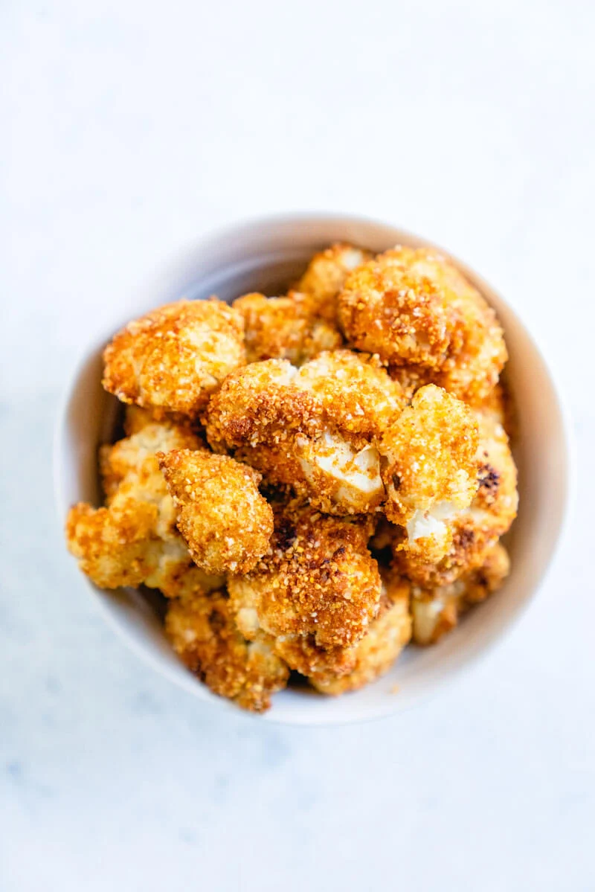

Crispy Breaded Cauliflower

Description
This crispy breaded cauliflower is salty, tangy, sweet, spicy,
and crunchy all at once! It’s 100% plant based and 100% delicious.
It’s roasted in the oven and covered in a savory,
salty, sweet and lightly spicy breading. It’s a bit of a play
on breaded fish tacos (though of course the flavor is quite
different!).
A few notes on the basic concept here. When you cut the cauliflower,
make sure to cut it into large florets to make them easy to bake.
Then, instead of mixing the cauliflower with olive oil like a typical
roasted cauliflower recipe, mix it with a heated mixture of peanut
butter, soy, maple, and hot sauce, which helps the breading to stick.
Then, add the breading: panko, cornmeal, and a bunch of spices.
Using cornmeal gives a big crunch to the cauliflower.
After baking 30 minutes in a hot oven, it’s good to go! The cauliflower
is best right out of the oven — though it still tastes crunchy after
sitting for a while at room temperature. If you refrigerate the
leftovers, the moisture in the refrigerator will take away the crunch.
OK, now the question: how to serve it? Try Crispy Cauliflower Tacos!
Ingredients
- 1 medium head cauliflower (about 2 pounds whole)
- 1/2 cup panko breadcrumbs (use gluten free panko as necessary)
- 1/2 cup cornmeal
- 1 teaspoon cumin
- 1 teaspoon smoked paprika
- 1 teaspoon garlic powder
- 1/4 teaspoon turmeric
- 1/2 teaspoon kosher salt
- 1 tablespoon refined coconut oil
- 1 tablespoon peanut butter
- 1 tablespoon maple syrup
- 2 tablespoons soy sauce (or tamari or coconut aminos)
- 1/2 tablespoon hot sauce
Steps
- Preheat the oven to 400F.
- Chop the cauliflower into large florets. Place them in a
large bowl.
- In a small bowl, mix together the panko, cornmeal, cumin,
smoked paprika, garlic powder, turmeric, and kosher salt.
- In a small saucepan over medium heat, whisk together the coconut
oil, peanut butter, maple syrup, soy sauce, and hot sauce until
fully combined and slightly darkened, 1 to 2 minutes. Pour the
sauce onto the cauliflower and stir several times until the
cauliflower is well coated.
- Pour about 1/3 of the dry mixture into the bowl with the
cauliflower and mix. Repeat twice to stir in the remaining
dry mixture to coat all of the cauliflower. Then remove the
breaded cauliflower from the bowl with your hands and place it
onto a parchment lined baking sheet. About 1/2 of the crumbs
will remain in the bowl; you can discard these.
- Bake the cauliflower for 30 minutes total, flipping the
cauliflower with a spatula at the 15 minute mark. Serve
immediately. If serving as an appetizer, you could add a drizzle
of Yum Yum Sauce or
another sauce. Or, kids love them with ketchup! (If you have
leftovers, you can store them refrigerated and then reheat them
in a 350F oven on a parchment lined baking sheet for about 10
minutes, flipping once.)